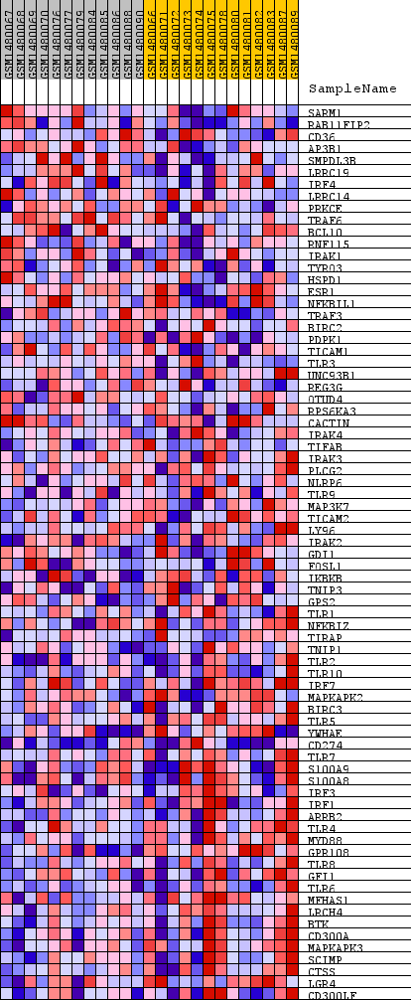
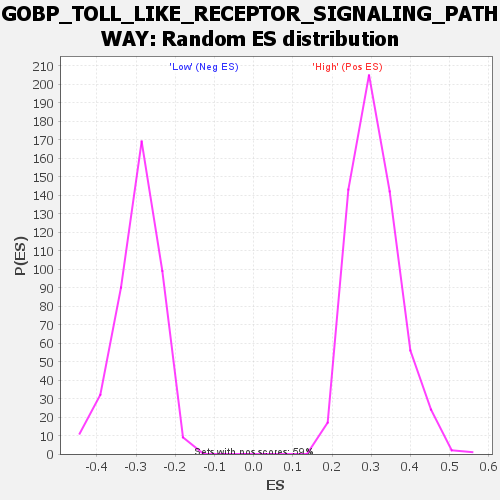

Profile of the Running ES Score & Positions of GeneSet Members on the Rank Ordered List
| Dataset | WG6v3.MRPL3.cls#High_versus_Low.MRPL3.cls#High_versus_Low_repos |
| Phenotype | MRPL3.cls#High_versus_Low_repos |
| Upregulated in class | Low |
| GeneSet | GOBP_TOLL_LIKE_RECEPTOR_SIGNALING_PATHWAY |
| Enrichment Score (ES) | -0.55047673 |
| Normalized Enrichment Score (NES) | -1.8671179 |
| Nominal p-value | 0.0 |
| FDR q-value | 0.0394465 |
| FWER p-Value | 0.547 |
| SYMBOL | TITLE | RANK IN GENE LIST | RANK METRIC SCORE | RUNNING ES | CORE ENRICHMENT | |
|---|---|---|---|---|---|---|
| 1 | SARM1 | SARM1 | 843 | 0.116 | -0.0128 | No |
| 2 | RAB11FIP2 | RAB11FIP2 | 1242 | 0.090 | -0.0096 | No |
| 3 | CD36 | CD36 | 2253 | 0.055 | -0.0471 | No |
| 4 | AP3B1 | AP3B1 | 2318 | 0.054 | -0.0361 | No |
| 5 | SMPDL3B | SMPDL3B | 3442 | 0.035 | -0.0847 | No |
| 6 | LRRC19 | LRRC19 | 3540 | 0.034 | -0.0807 | No |
| 7 | IRF4 | IRF4 | 3547 | 0.034 | -0.0719 | No |
| 8 | LRRC14 | LRRC14 | 3564 | 0.034 | -0.0638 | No |
| 9 | PRKCE | PRKCE | 3612 | 0.033 | -0.0573 | No |
| 10 | TRAF6 | TRAF6 | 3653 | 0.033 | -0.0507 | No |
| 11 | BCL10 | BCL10 | 3753 | 0.032 | -0.0474 | No |
| 12 | RNF115 | RNF115 | 3992 | 0.029 | -0.0520 | No |
| 13 | IRAK1 | IRAK1 | 4222 | 0.027 | -0.0567 | No |
| 14 | TYRO3 | TYRO3 | 4512 | 0.024 | -0.0653 | No |
| 15 | HSPD1 | HSPD1 | 4673 | 0.022 | -0.0676 | No |
| 16 | ESR1 | ESR1 | 5173 | 0.018 | -0.0885 | No |
| 17 | NFKBIL1 | NFKBIL1 | 5509 | 0.016 | -0.1015 | No |
| 18 | TRAF3 | TRAF3 | 5677 | 0.015 | -0.1061 | No |
| 19 | BIRC2 | BIRC2 | 6015 | 0.013 | -0.1201 | No |
| 20 | PDPK1 | PDPK1 | 6367 | 0.011 | -0.1353 | No |
| 21 | TICAM1 | TICAM1 | 6661 | 0.010 | -0.1478 | No |
| 22 | TLR3 | TLR3 | 7712 | 0.005 | -0.2007 | No |
| 23 | UNC93B1 | UNC93B1 | 7862 | 0.005 | -0.2071 | No |
| 24 | REG3G | REG3G | 8617 | 0.002 | -0.2456 | No |
| 25 | OTUD4 | OTUD4 | 8722 | 0.001 | -0.2506 | No |
| 26 | RPS6KA3 | RPS6KA3 | 9343 | -0.000 | -0.2825 | No |
| 27 | CACTIN | CACTIN | 10105 | -0.003 | -0.3210 | No |
| 28 | IRAK4 | IRAK4 | 10758 | -0.006 | -0.3532 | No |
| 29 | TIFAB | TIFAB | 11024 | -0.007 | -0.3652 | No |
| 30 | IRAK3 | IRAK3 | 11618 | -0.009 | -0.3935 | No |
| 31 | PLCG2 | PLCG2 | 12235 | -0.012 | -0.4222 | No |
| 32 | NLRP6 | NLRP6 | 12253 | -0.012 | -0.4200 | No |
| 33 | TLR9 | TLR9 | 12985 | -0.016 | -0.4537 | No |
| 34 | MAP3K7 | MAP3K7 | 13040 | -0.016 | -0.4523 | No |
| 35 | TICAM2 | TICAM2 | 13261 | -0.017 | -0.4591 | No |
| 36 | LY96 | LY96 | 13427 | -0.018 | -0.4628 | No |
| 37 | IRAK2 | IRAK2 | 13700 | -0.020 | -0.4715 | No |
| 38 | GDI1 | GDI1 | 13904 | -0.022 | -0.4763 | No |
| 39 | FOSL1 | FOSL1 | 14451 | -0.026 | -0.4977 | No |
| 40 | IKBKB | IKBKB | 14862 | -0.029 | -0.5113 | No |
| 41 | TNIP3 | TNIP3 | 14991 | -0.030 | -0.5099 | No |
| 42 | GPS2 | GPS2 | 15777 | -0.038 | -0.5404 | Yes |
| 43 | TLR1 | TLR1 | 15837 | -0.039 | -0.5331 | Yes |
| 44 | NFKBIZ | NFKBIZ | 15959 | -0.040 | -0.5287 | Yes |
| 45 | TIRAP | TIRAP | 16043 | -0.041 | -0.5221 | Yes |
| 46 | TNIP1 | TNIP1 | 16049 | -0.041 | -0.5114 | Yes |
| 47 | TLR2 | TLR2 | 16374 | -0.046 | -0.5159 | Yes |
| 48 | TLR10 | TLR10 | 16441 | -0.047 | -0.5069 | Yes |
| 49 | IRF7 | IRF7 | 16500 | -0.048 | -0.4972 | Yes |
| 50 | MAPKAPK2 | MAPKAPK2 | 16520 | -0.048 | -0.4855 | Yes |
| 51 | BIRC3 | BIRC3 | 16941 | -0.055 | -0.4927 | Yes |
| 52 | TLR5 | TLR5 | 16983 | -0.055 | -0.4801 | Yes |
| 53 | YWHAE | YWHAE | 17275 | -0.061 | -0.4791 | Yes |
| 54 | CD274 | CD274 | 17496 | -0.064 | -0.4733 | Yes |
| 55 | TLR7 | TLR7 | 17521 | -0.065 | -0.4573 | Yes |
| 56 | S100A9 | S100A9 | 17648 | -0.068 | -0.4458 | Yes |
| 57 | S100A8 | S100A8 | 17844 | -0.073 | -0.4364 | Yes |
| 58 | IRF3 | IRF3 | 17871 | -0.074 | -0.4182 | Yes |
| 59 | IRF1 | IRF1 | 17987 | -0.078 | -0.4035 | Yes |
| 60 | ARRB2 | ARRB2 | 17992 | -0.078 | -0.3830 | Yes |
| 61 | TLR4 | TLR4 | 18004 | -0.078 | -0.3628 | Yes |
| 62 | MYD88 | MYD88 | 18196 | -0.084 | -0.3503 | Yes |
| 63 | GPR108 | GPR108 | 18219 | -0.085 | -0.3289 | Yes |
| 64 | TLR8 | TLR8 | 18283 | -0.088 | -0.3089 | Yes |
| 65 | GFI1 | GFI1 | 18466 | -0.096 | -0.2929 | Yes |
| 66 | TLR6 | TLR6 | 18565 | -0.101 | -0.2711 | Yes |
| 67 | MFHAS1 | MFHAS1 | 18600 | -0.103 | -0.2454 | Yes |
| 68 | LRCH4 | LRCH4 | 18626 | -0.105 | -0.2189 | Yes |
| 69 | BTK | BTK | 18669 | -0.108 | -0.1926 | Yes |
| 70 | CD300A | CD300A | 18762 | -0.114 | -0.1671 | Yes |
| 71 | MAPKAPK3 | MAPKAPK3 | 18832 | -0.119 | -0.1390 | Yes |
| 72 | SCIMP | SCIMP | 18851 | -0.121 | -0.1080 | Yes |
| 73 | CTSS | CTSS | 19090 | -0.146 | -0.0816 | Yes |
| 74 | LGR4 | LGR4 | 19211 | -0.165 | -0.0442 | Yes |
| 75 | CD300LF | CD300LF | 19354 | -0.208 | 0.0035 | Yes |

